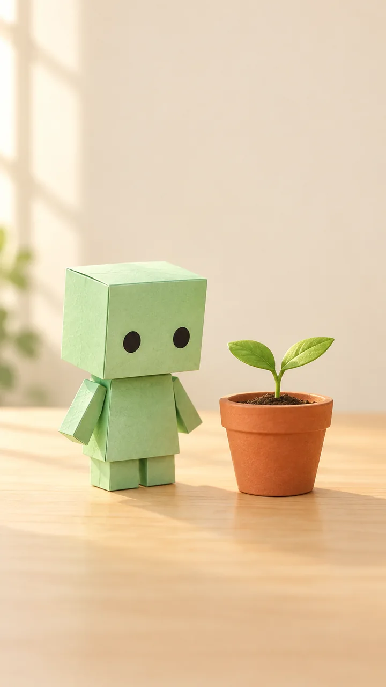
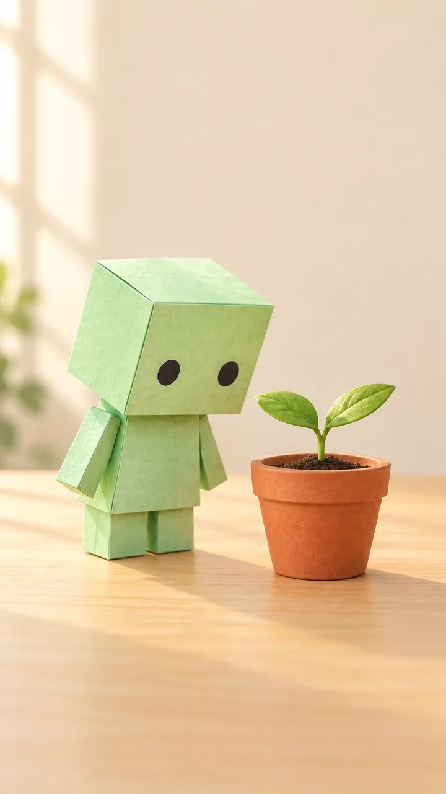

메뉴·행동 · ChatGPT 새 채팅에서 그림 생성 요청 → 결과의 저장 버튼을 씁니다. Gemini는 이미지 만들기에 해당하는 도구 → 설명 입력 → 다운로드를 씁니다.
출력 → 다음 · reference.png → 승인한 파일을 다음 생성의 참조로 업로드
글자는 편집기에서 더합니다
입력 · 글자 없는 그림·짧은 해설
메뉴·행동 · 손·물체·잎 수·표정·세로 치수를 확인합니다. 자막은 8장의 편집 단계에서 입력합니다.
출력 → 다음 · scene-01.png 등 장면 카드 → Clipchamp 가져오기
복사 · 기준 그림
9:16 세로 쇼츠의 기준 그림. 민트색 종이 로봇 하나가 두 잎 새싹이 있는
테라코타 화분 왼쪽에 서 있다. 네모 머리, 검은 동그란 눈 둘, 입 없음,
짧은 직사각 팔. 밝은 나무 책상, 크림색 배경, 왼쪽 아침 창빛,
무광 종이 질감. 로봇과 화분 전체가 보이는 미디엄 샷.
위아래에 자막을 나중에 넣을 빈 공간. 글자·실존 인물·브랜드·로고 없음.

AI 생성 예시 · 기준 그림 내장 이미지 생성 기능으로 만든 실제 삽화입니다. 위 프롬프트의 영문 생성 지시를 사용했습니다. 실제 사용 프롬프트

AI 생성 예시 · 다음 장면 카드 기준 그림을 참조해 고개를 기울이는 구도만 바꿨습니다. 참조 이미지와 수정 프롬프트
Flow의 Veo로 기준 그림을 움직입니다
참조와 생성 조건을 넣습니다
입력 · reference.png·아래 영문 동작 프롬프트
메뉴·행동 · Flow → 새 프로젝트 → Frames to Video 또는 Ingredients to Video를 고릅니다. 기준 이미지를 넣고 프롬프트 입력창에 붙입니다. 설정에서 사용 가능한 Veo 모델·9:16·6초·출력 수를 확인합니다.
출력 → 다음 · 생성 전 크레딧 표시 → 예산 메모
샷 하나를 생성하고 검사합니다
입력 · 승인된 참조·한 동작
메뉴·행동 · 생성 → 미리 보기에서 눈·팔·화분·카메라·불필요한 대사를 확인 → 다운로드합니다. 실패한 요소 하나만 고쳐 다시 만듭니다.
출력 → 다음 · shot-01.mp4 → 같은 참조로 다음 샷 → shot-02.mp4 등
같은 스타일로 연결합니다
입력 · 승인 참조·이전 샷 끝 자세·같은 모델 설정
메뉴·행동 · 다음 샷에도 참조를 넣습니다. 색·소품·조명을 유지하고 한 동작만 바꿉니다. 마지막 프레임을 참조할 수 있으면 연결 자세를 맞춥니다.
출력 → 다음 · 검수한 짧은 MP4 4개 + 프롬프트·모델·비용 기록 → 7장
앱이 업데이트되면 버튼 이름이나 위치가 조금 다를 수 있어요. 최신 앱 화면에서 비슷한 이름의 버튼을 찾아 주세요. 못 찾겠으면 공식 도움말(열기)을 확인하세요.
복사 · 피사체·동작·샷·카메라·빛·스타일·길이
The mint paper robot gently tilts its head toward the seedling once.
Medium close-up, locked camera, soft morning light from the left.
Keep the reference robot, terracotta pot, two leaves, cream room and matte paper style.
No cuts, no dialogue, no music, no text, no logos.
Target: 6 seconds, vertical 9:16; also set duration and aspect ratio in the controls.
이미지→영상은 그림을 매번 다시 설명하기보다 무엇이 어떻게 움직이는지 적습니다. 길이·비율은 입력 문장과 설정 화면을 함께 맞춥니다.[Y364][Y349]
Runway로 대체하려면?
생성 화면의 Image to Video → 기준 이미지 업로드 → 같은 동작 문장 → 모델·길이·9:16 → Generate → Download 순으로 진행합니다. Gen-4.5의 이미지→영상은 세로를 지원하지만 텍스트→영상은 문서상 16:9입니다. Gen-4.5는 Standard 이상, 2~10초·720p·초당 12크레딧입니다.[Y349][Y384]
Free는 최초 125크레딧이며 월 갱신이 아닙니다. Standard는 US$15/월·625크레딧입니다. 무료 모델 목록과 한국 계정 접근은 선택 화면에서 확인합니다.[Y347][Y383]
좋은 결과
두 장면의 민트색·눈·화분·빛이 이어지고 로봇은 한 번 고개만 기울입니다.
나쁜 결과 → 고치기
같은 프롬프트에서 걷기·물주기·꽃피우기·카메라 회전을 모두 요구합니다. 동작을 나눠 생성하고 외형이 바뀐 샷은 승인 참조로 다시 만듭니다.
시간·비용 · AI 영상 전체 레시피는 약 80분+생성 대기·재시도입니다. Flow 비Ultra Veo 3.1 Fast 기준 4샷×1출력×20=80크레딧, 2안씩이면 160입니다. 무료 일 50크레딧보다 큽니다. Google AI Plus 표시가는 ₩7,500/월·추가 월 200, Pro는 ₩29,000/월·추가 월 1,000입니다.[Y343][Y375] 생성 샷을 8초로 골라도 4×8=32초입니다. 해설 길이에 맞춰 설명 카드를 더해 30~45초로 완성합니다. 시간은 작업 계획용입니다.